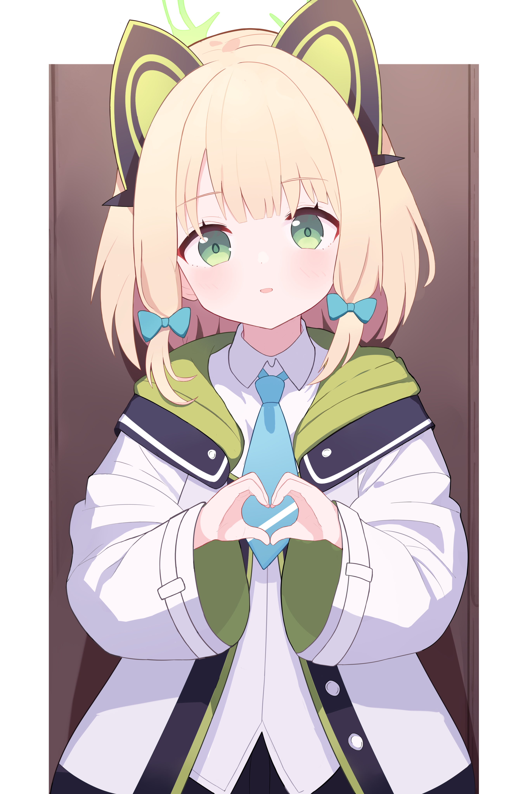

最喜欢小绿了！
以下内容仅表达 我(KFACBT) 对才羽绿的喜爱
我已经迷上ミドリ，无法回头
虽然小绿只是众多学生里论战力排不上顶尖论剧情也没那么出彩的孩子，但是就是游戏部这种没有那么多政治纷争剧情，更多重点在社团活动的日常才是我最爱的TAT真的喜欢身妹妹却很可靠，有时想表现的很成熟，失败时反应也很可爱，而且她真的很会！ “对姐姐保密哦”真的好可爱啊啊啊还有女仆装的偷跑play破坏力超强而且猫耳耳机超可爱，金发碧眼真的真的很漂亮啊啊啊啊属于是如果三次元存在真的会想直接娶回家疼爱的老婆！更重要的是，憂希小姐的萝莉音啊，真的绝了！她说话的那段尾音真的有魔力一样！我是真顶不住随便说一句话就像在撒娇加上自信笑的小表情，就连哭哭颜的空洞感都十分迷人！想想小绿在别的孩子面前认真又有些不自信，在老师面前就又是另一副样子，反差真的好萌啊啊啊啊！好想好想娶回家！！！

这是小绿，她很可爱
本网站 是游戏 《蔚蓝档案》 的同人网站，其中的信息均为 已经公开了 的信息。本网站上的内容不代表任何官方观点。
本网站为非盈利站点。
本站与 ブルーアーカイブ、Yostar、Nexon 以及 Nexon Games
没有任何形式的关联。
Copyright © 2024 KFACBT. All rights reserved.
本站基于 MDUI 构建，相关版权归原作者所有。